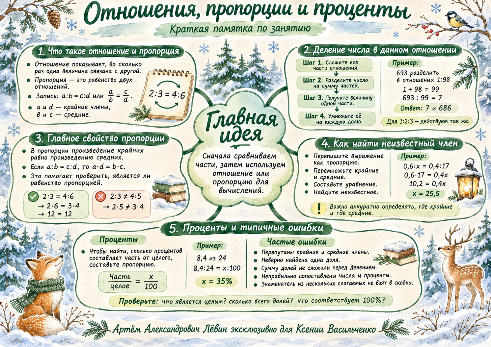

Урок 19 ноября 2026 · Математика
Отношения,
пропорции
и проценты
От одной доли — к нескольким частям; от равенства отношений — к нахождению неизвестного. Главное: видеть, что сравниваем и чему соответствует целое.
01 / Деление
Сколько стоит одна доля?
Отношение 2:7 говорит не о готовых числах, а о том, что первая часть содержит две одинаковые доли, а вторая — семь.
- Сложите коэффициенты отношения: 2 + 7 = 9 долей.
- Разделите исходное число 693 на девять долей: 693 : 9 = 77.
- Умножьте 77 на каждый коэффициент: 154 и 539.
- Проверьте сумму: 154 + 539 = 693.
Правило для отношения a:b
Здесь q — величина одной доли. Тогда первая часть равна q · a, вторая — q · b.
Пример 1:98
693 : 99 = 7; получаются 7 и 686. Проверка: 7 + 686 = 693.
02 / Обобщение
Долей может быть три
Если число разделить в отношении 1:2:3, порядок действий не меняется: складываем все коэффициенты, делим число на сумму и умножаем.
Число 12 в отношении 1:2:3
12 : 6 = 2 — одна доля.
Проверка: 2 + 4 + 6 = 12.
Полезное наблюдение
Сумма коэффициентов — это число одинаковых долей, а не количество получившихся частей. Для отношения 1:2:3 частей три, но долей шесть.
03 / Проверка
Пропорция — равенство отношений
В записи a:b = c:d крайними членами называют a и d, средними — b и c. Знаменатели b и d не должны быть равны нулю.
Основное свойство
При ненулевых b и d равенство отношений равносильно равенству произведений крайних и средних.
Верная пропорция
2 : 3 = 4 : 6
2 · 6 = 3 · 4 = 12 — равенство верно.
Как опровергнуть
2 : 3 ≠ 4 : 5
Сравним 2 · 5 = 10 и 3 · 4 = 12. Они не равны, значит равенство отношений неверно.
Пример с десятичными дробями
3,06 : 0,9 = 4,08 : 1,2 — верная пропорция: 3,06 · 1,2 = 0,9 · 4,08 = 3,672.
04 / Уравнение
Ищем неизвестный член
Перемножение крайних и средних переводит пропорцию в обычное уравнение. Важно правильно выразить неизвестную величину.
Пример с неизвестным знаменателем
0,6 / x = 4 / 17
Сначала ограничение: x ≠ 0.
0,6 · 17 = 4x
10,2 = 4x → x = 2,55
Чтобы найти x, нужно разделить 10,2 на 4, а не умножить.
Не теряйте скобки
1,5 / (a + 0,3) = 6,3 / 0,21
Весь знаменатель a + 0,3 — единый объект; a ≠ −0,3.
0,315 = 6,3(a + 0,3)
Получаем a + 0,3 = 0,05, поэтому a = −0,25. Обе дроби равны 30.
05 / Применение
Проценты — та же пропорция
Чтобы найти долю в процентах, поставьте целому в соответствие 100%, а нужной части — x%.
Световой день 8,4 часа из 24
| Время | Доля от суток |
|---|---|
| 24 часа | 100% |
| 8,4 часа | x% |
8,4 / 24 = x / 100
24x = 840, следовательно x = 35%.
Проверка смысла
Если часть меньше целого, результат должен быть меньше 100%. 35% от 24 часов составляют 8,4 часа.
06 / Самопроверка
Где легко ошибиться
Перед тем как считать, проверьте смысл отношения и место каждого числа в записи.
- Не считайте коэффициенты отношения готовыми частями.
- Не забывайте сложить все коэффициенты перед поиском одной доли.
- В уравнении 4x = 10,2 делите на 4.
- Знаменатель со сложением берите в скобки.
- Не делите на ноль; указывайте ограничения.
- Одна доля может быть дробной: 693 : 5 = 138,6.
- В задаче о процентах определите целое, соответствующее 100%.
- После деления проверяйте сумму частей и заданное отношение.
07 / Путь А
Десять задач для закрепления
Упражнения из пособия идут от простого деления на доли до сложной задачи на отношение трёх чисел. Отмечайте сделанное; ответы можно раскрыть в конце.
- Разделите число 48 в отношении 1:3.
- Разделите число 77 в отношении 4:7.
- Разделите число 42 в отношении 1:2:4.
- Разделите число 65 в отношении 2:3. Проверьте сумму частей.
- Докажите, что 3/5 = 12/20 является пропорцией.
- Проверьте, является ли пропорцией равенство 4/7 = 18/28. Обоснуйте вывод.
- Найдите x из пропорции 5/x = 15/21.
- Найдите x из пропорции 0,8/(x + 0,5) = 4/15.
- Продолжительность светового дня — 7,2 часа. Какой процент суток она составляет? Решите через пропорцию.
- Три числа относятся как 2:5:8. Самое большое число на 36 больше самого маленького. Найдите все три числа и их сумму.
Выполнено: 0 из 10
Показать ответы к десяти заданиям
| № | Ответ |
|---|---|
| 1 | 12 и 36 |
| 2 | 28 и 49 |
| 3 | 6, 12, 24 |
| 4 | 26 и 39; сумма 65 |
| 5 | Да: 3 · 20 = 5 · 12 = 60 |
| 6 | Нет: 4 · 28 = 112 ≠ 126 = 7 · 18 |
| 7 | x = 7 |
| 8 | x = 2,5 (x ≠ −0,5) |
| 9 | 30% |
| 10 | 12, 30, 48; сумма 90 |
08 / Материалы
Повторить на бумаге
Полная версия пособия содержит схемы алгоритмов и таблицу ответов. Зимний акварельный постер помогает быстро восстановить структуру темы.

